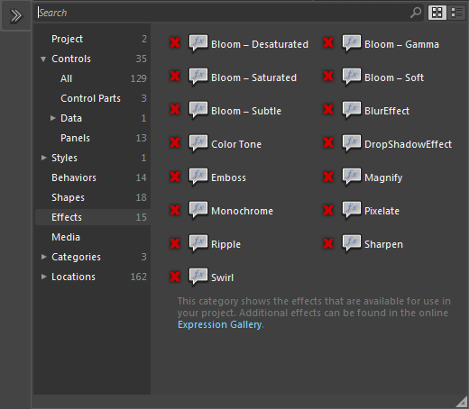

Effects
Effects are simple pixel processing operations. An effect takes a bitmap source as an input and produces a new bitmap after applying the effect, such as a blur or drop shadow. Each effect exposes properties to control it.
Effects can be applied to UIElement objects, such as a Button or TextBox. When you set an effect to a layout container, such as DockPanel or Canvas, the effect is applied to the visual tree of the element or visual, including all of its child elements.
The architecture to support effects is not yet implemented by Noesis GUI Framework.
